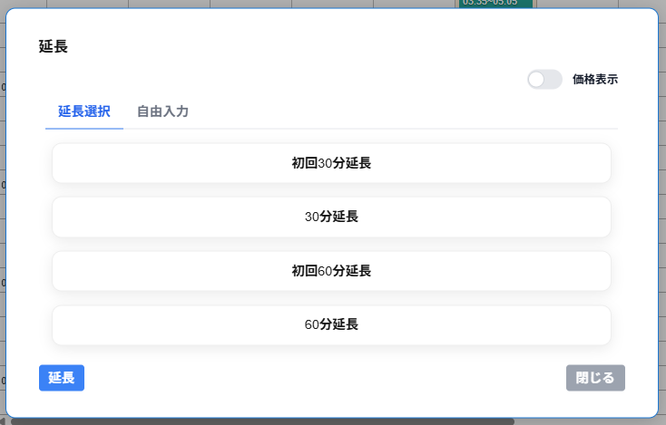

延長画面上部に延長選択タブと自由入力タブの切り替えが表示されます。
延長選択のタブにはデータ管理で登録した延長が一覧で表示されます。
価格表示を選択すると一覧の延長の請求金額・キャスト支払・追加時間(分)が表示されます。
自由入力のタブには、請求金額・キャスト支払・追加時間(分)を入力します。
画面左下の延長をクリックすると対象の接客の延長が完了します。
延長後の接客が予約・接客・休憩と重複する場合は、延長は適用できません。
※他の予約・接客・休憩と重複している場合は、予約・接客・休憩（予約・接客・休憩の開始時間と終了時間）と時間が重複しています、と表示されます。
